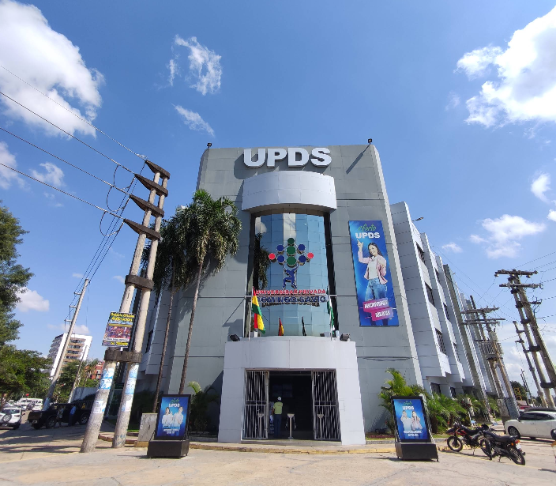
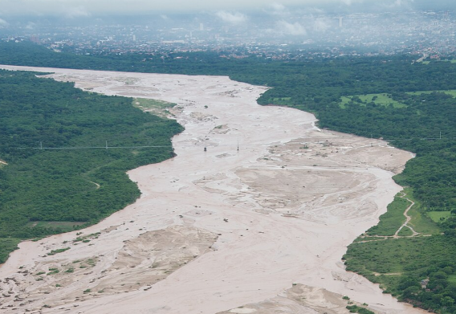
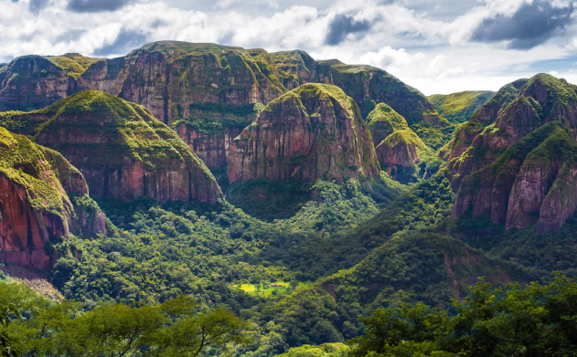
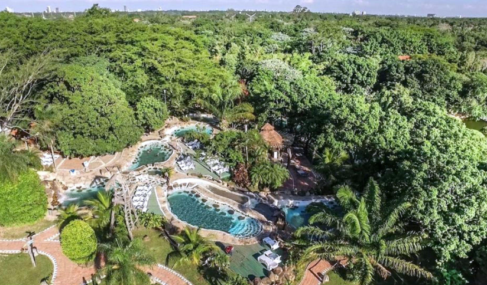
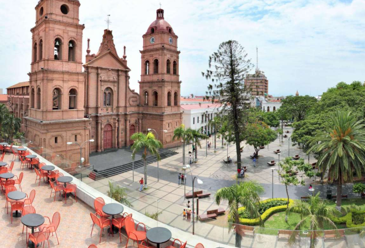
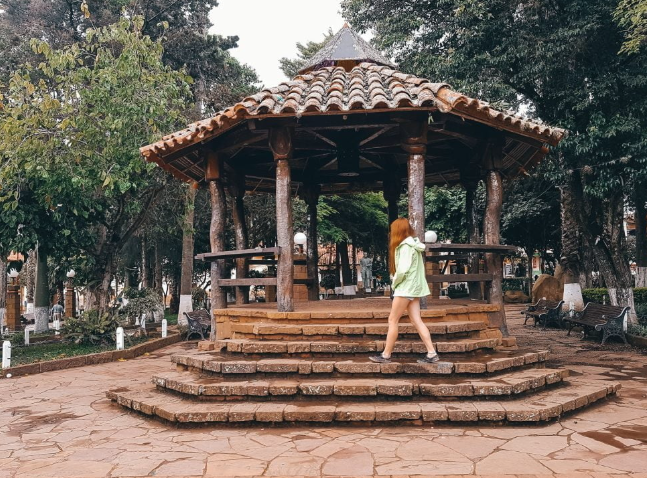
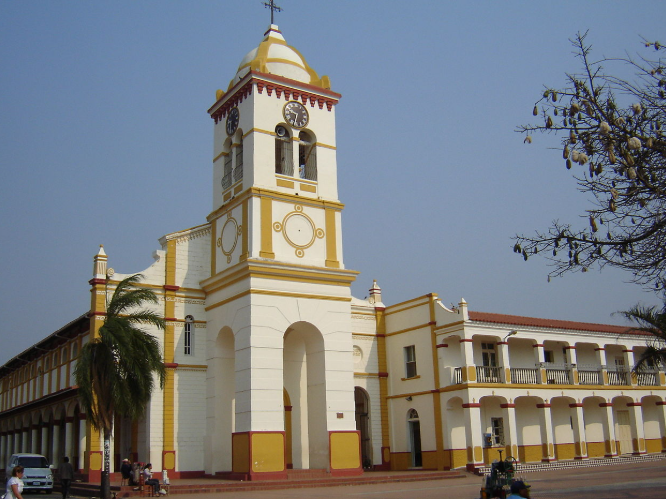
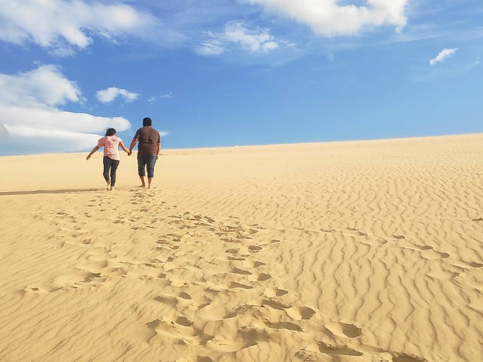
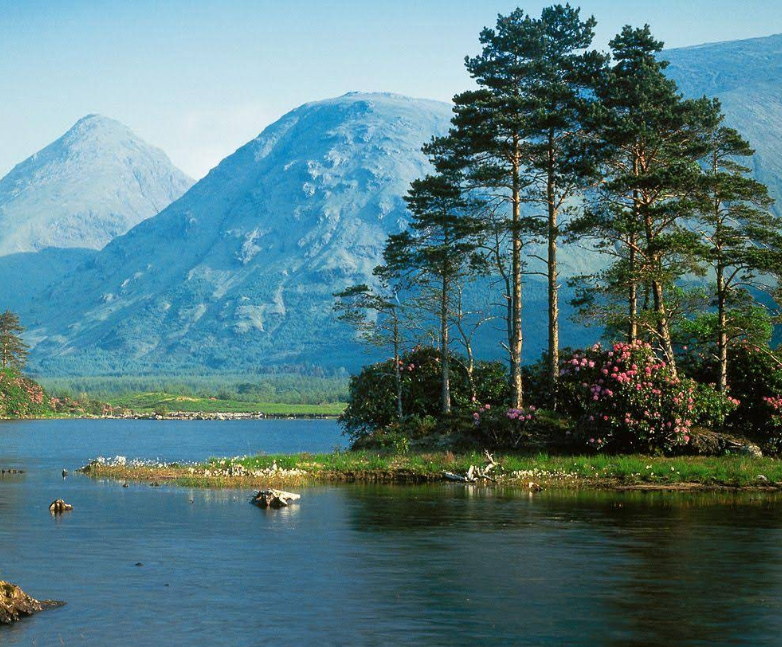
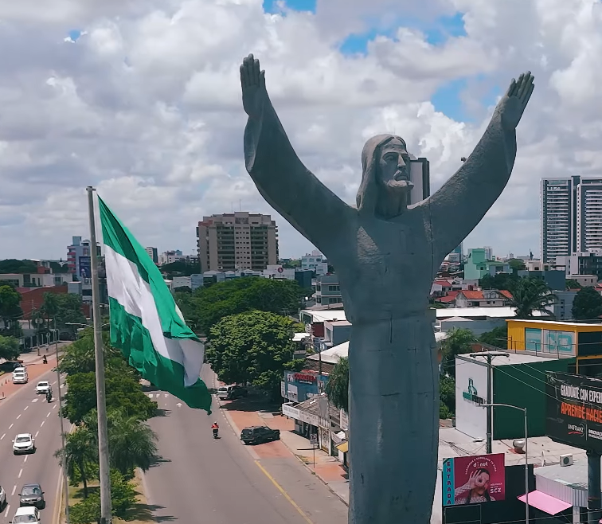

Guía Turística
Explorá los destinos más emblemáticos de Santa Cruz y el departamento. Hacé clic en cualquier pin o en la lista lateral para ver más información y abrir Google Maps.
📍 Destinos turísticos
Conocé cada destino

Universidad
Universidad Privada Domingo Savio (UPDS)
Sede Santa Cruz de la UPDS. Centro académico con carreras de Derecho, Medicina, Ingeniería y más.

Naturaleza
Río Piraí
El río emblemático de Santa Cruz. Sus playas de arena blanca son el destino favorito de los cruceños los fines de semana.

Naturaleza
Parque Nacional Amboró
Uno de los parques más biodiversos del mundo, con más de 800 especies de aves, jaguares y flora exuberante.

Naturaleza
Biocentro Güembé
El jardín de mariposas más grande de Bolivia, con piscinas naturales y selva tropical en las afueras de la ciudad.

Cultura
Plaza 24 de Septiembre
El corazón histórico de la ciudad, rodeada de la Catedral Metropolitana, la Casa de Gobierno y palmeras reales.

Cultura
Samaipata – Plaza Principal
Corazón del pintoresco pueblo de Samaipata, a 120 km de Santa Cruz. Puerta de entrada a El Fuerte, Patrimonio de la UNESCO.

Cultura
Santuario de Cotoca
El lugar de peregrinación más importante de Bolivia. Cada año miles de fieles caminan desde Santa Cruz hasta este templo.

Aventura
Lomas de Arena
Dunas de arena en plena llanura cruceña. Ideal para sandboard, caminatas al atardecer y observación de aves.

Aventura
Parque Nacional Noel Kempff Mercado
Patrimonio Natural de la UNESCO. Cascadas imponentes, mesetas prehistóricas y selva amazónica completamente virgen.

Urbano
Cristo Redentor de Santa Cruz
Monumento icónico visible desde gran parte de la ciudad. Referencia espiritual y punto de encuentro de los cruceños.